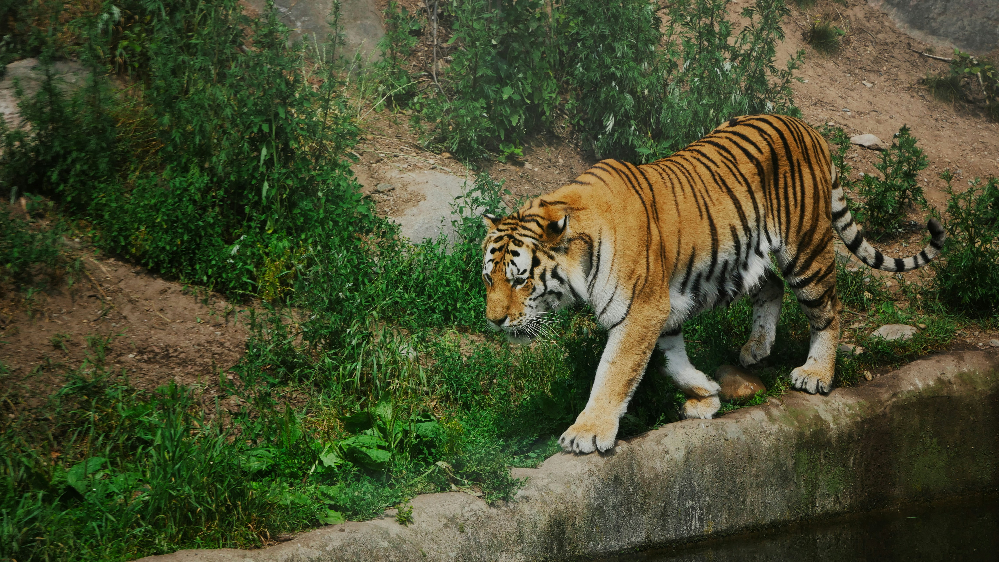

Explore Bihar's Wonders
From ancient Buddhist sites to wildlife reserves, Bihar offers a unique travel experience for history buffs and nature lovers alike.

Bodh Gaya
Sacred site where Lord Buddha attained enlightenment.

Rajgir
Known for hot springs, hills, and Buddhist history.

Valmiki Tiger Reserve
A natural reserve in West Champaran for wildlife lovers.
Nalanda University
Ancient center of learning and UNESCO heritage site.

Patna
The capital city, rich in history and modern attractions.

Vaishali
One of the oldest republics, associated with Lord Buddha and Mahavira.